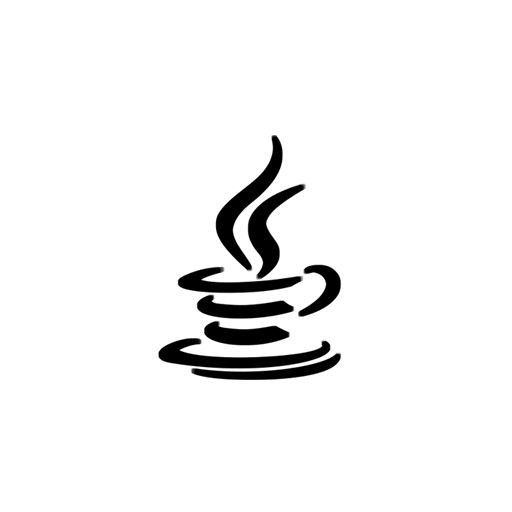
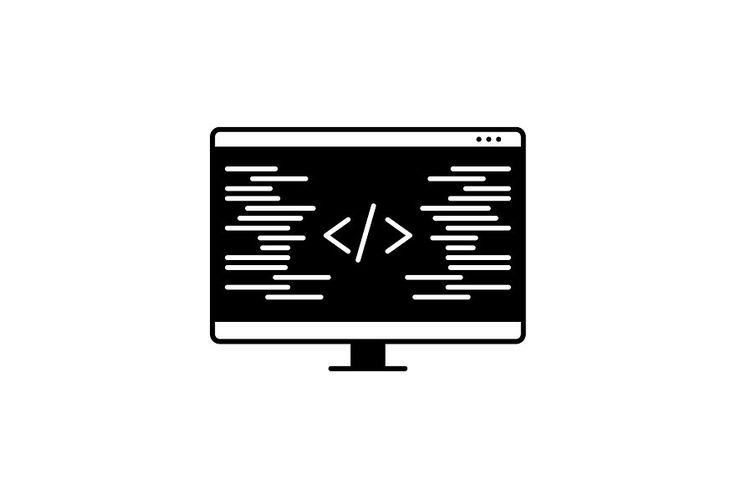
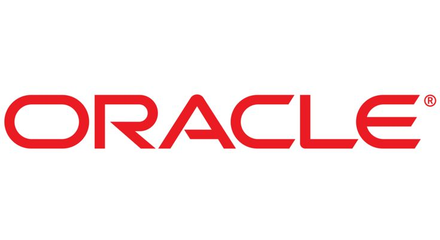
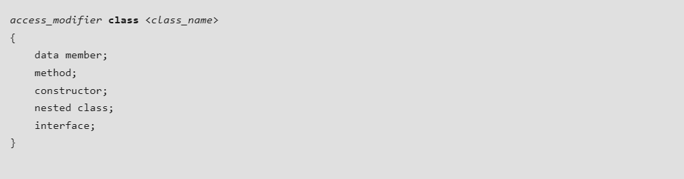
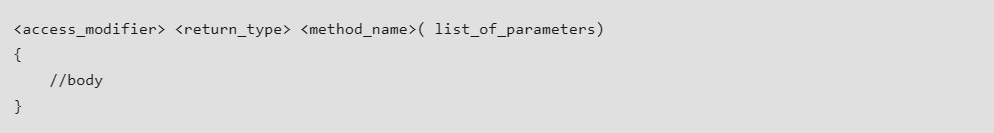
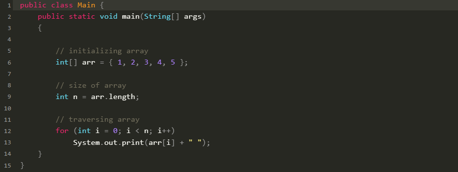
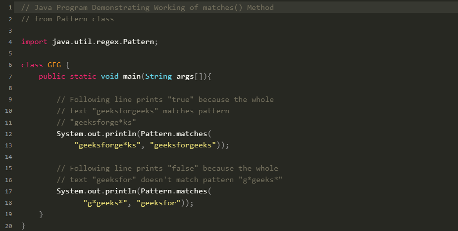

Руководство по языку
программирования Java
Если вы новичок в мире программирования и хотите начать
свой путь в области программирования на Java, то это
руководство по изучению Java для начинающих дает вам
полный обзор того, как начать программировать на Java.

Java - это быстро, надежно и безопасно. От настольных компьютеров до веб-приложений, от научных суперкомпьютеров до игровых консолей, от мобильных телефонов до Интернета - Java используется повсюду. Java проста в освоении, ее синтаксис прост и понятен. Она основана на C ++ (так проще для программистов, знающих C ++). Java убрано множество сбивающих с толку и редко используемых функций, таких как явные указатели, перегрузка операторов и т.д. Java также заботится об управлении памятью и для этого предоставляет автоматический сборщик мусора. При этом неиспользуемые объекты будут собираться автоматически.

Для разработки на языке программирования Java нам потребуется специальный комплект инструментов, который называется JDK или Java Development Kit. Однако стоит отметить, что существуют разные реализации JDK, хотя все они используют один и тот же язык - Java. Две наиболее популярных реализации - Oracle JDK и OpenJDK.
Oracle JDK всецело развивается компанией Oracle. OpenJDK же представляет открытый проект, который развивается сообществом Java-разработчиков, а также рядом компаний, в том числе Oracle, Red Hat и рядом других.

Классы и объекты - это базовые концепции объектно-ориентированного программирования, которые вращаются вокруг реальных сущностей и программирования на Java. Это означает, что для реализации чего-либо на Java создаются классы и объекты.

Метод - это набор инструкций, которые выполняют некоторую конкретную задачу и возвращают результат вызывающей стороне. Метод может выполнять некоторую конкретную задачу, ничего не возвращая. Методы позволяют нам повторно использовать код без повторного ввода кода. В Java каждый метод должен быть частью некоторого класса, который отличается от таких языков, как C, C ++ и Python. Методы экономят время и помогают нам повторно использовать код без повторного ввода кода. Это не только делает методы важной частью Java, но и обязательной темой для изучения учащимися.

Массив - это группа переменных одинакового типа, на которые ссылаются общим именем. Массивы в Java работают иначе, чем в C / C ++. Чтобы узнать больше, обратитесь к упомянутой статье.

Многопоточность - это функция Java, которая позволяет выполнять одновременно две или более частей программы для максимального использования центрального процессора. Каждая часть такой программы называется потоком. Итак, потоки - это легкие процессы внутри процесса. Хотя на первый взгляд это может показаться сложным, это очень важная часть параллельного программирования на Java.

Каковы основы программирования на Java?
Java - популярный язык программирования, который известен своей платформенной независимостью, что означает, что он может работать на любом устройстве, имеющем виртуальную машину Java (JVM). Это объектно-ориентированный язык с синтаксисом, похожим на C ++, что делает его относительно простым в освоении новичками.
Как я могу начать изучать Java как новичок?
Как новичок, вы можете начать изучать Java, установив Java Development Kit (JDK) на свой компьютер и используя интегрированную среду разработки (IDE), такую как Eclipse или IntelliJ IDEA. Также доступно множество онлайн-руководств и курсов, которые помогут вам начать работу с программированием на Java.
Какие важные концепции Java необходимо понимать?
Некоторые важные концепции для понимания в Java включают принципы объектно-ориентированного программирования, типы данных, управляющие структуры, массивы и классы. Также важно изучить обработку исключений, файловый ввод-вывод и понимание документации Java API.
Каковы возможности карьерного роста для Java-программистов?
Программисты на Java имеют широкий спектр возможностей для карьерного роста, включая веб-разработку, разработку программного обеспечения, разработку мобильных приложений и корпоративных приложений. Java используется во многих отраслях, что делает ее ценным навыком для лиц, ищущих работу в области технологий.
Подходит ли Java для начинающих?
Да, Java считается хорошим языком для начинающих из-за его удобочитаемости, знакомого синтаксиса и обширной документации. Он также широко используется в индустрии программного обеспечения, что делает его ценным навыком для будущих карьерных перспектив.